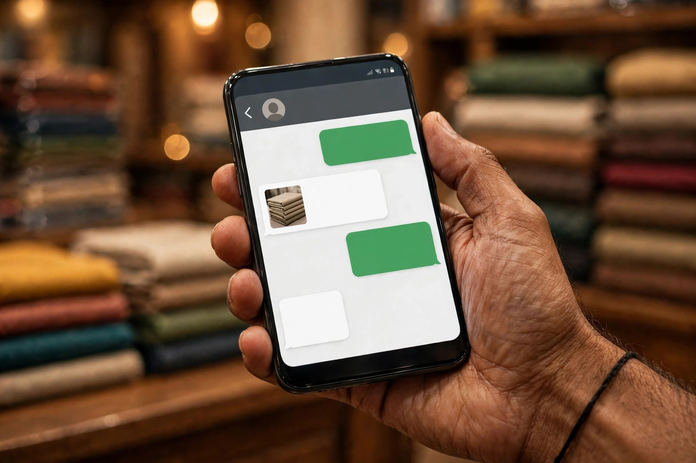

If Google is where Chowk Azam customers discover a business, WhatsApp is very often where they deal with it. A farmer photographs a broken part and sends it to a dealer. A retailer in a nearby village asks for today’s rates and confirms an order. A traveller books a room or asks a workshop whether they can reach him. Traders already live on the app; the missed opportunity is usually at the joining point, because customers who find the business on Google cannot always reach its WhatsApp quickly, and customers chatting on WhatsApp get no help finding the business again.
This article is about joining the two properly. It covers presenting a trustworthy WhatsApp presence, connecting it to your Google profile and any website, handling enquiries in a way that wins orders, and keeping boundaries so the phone does not consume the business day. Zaheer Seo Expert is based in Layyah and helps Chowk Azam traders arrange this setup online and by phone. Nothing here requires new equipment, only clearer habits with tools already in your pocket.
Why the Two Tools Need Each Other
Google search reaches strangers at the moment of need, but the conversation that follows often needs the speed and familiarity of chat, especially for prices that change, stock that moves, and orders arranged by photo and voice note. WhatsApp, by contrast, is excellent with people who already have your number and poor at introducing you to anyone new. Each tool covers the other’s weakness.
A trader who relies only on WhatsApp is invisible to the traveller, the new resident and the farmer from a village where his number has not circulated. A trader with a fine Google profile but a slow or unclear contact route loses enquiries at the last step. The complete pattern is simple: be found on Google, be reached on WhatsApp, and be remembered for the next order. Our SEO services in Chowk Azam page sets out how this fits into a wider local presence.

Presenting a WhatsApp Presence Customers Trust
Use the business version of the app if you can, with your real business name, a clear profile photo of the shop or its board, and business hours filled in. A catalogue, even a simple one with your main lines and a note that rates change daily, saves repeated questions and looks serious to a first-time enquirer. Set a greeting message that thanks the customer and states when you reply, so expectations are fair on both sides.
Keep the number consistent. The WhatsApp number on your Google profile, your website, your board and your visiting card should be the same, and it should belong to the business rather than to a staff member who may leave. Scattered numbers split your customer relationships across phones you do not control, a problem that only becomes visible when someone departs.
- Business account with real name and shop photo
- A simple catalogue of main lines and services
- A greeting that states reply hours honestly
- One business number, used consistently everywhere
Connecting Google to Your Chat
Your Google profile can carry messaging options and, most importantly, the correct phone number one tap away from a caller. Where you have a website, a clear call or chat button on every page, especially on phones, turns searchers into conversations without them hunting for contact details. The button should sit where thumbs expect it and the page should load fast on the connections common around Layyah district.
Every break in that chain, a wrong number, a page with no contact option, a chat that looks personal rather than business, quietly costs orders. Testing the chain yourself on another phone takes five minutes and is worth doing monthly. The profile side of the chain is covered step by step in our article on Google Maps for Chowk Azam businesses.

Handling Enquiries So They Become Orders
Speed matters, but clarity matters more. Answer the actual question first, price, availability or timing, before any general talk. Photos of the real item in your shop build confidence far better than catalogue images downloaded from the internet, particularly for machinery, parts and grain quality. Where rates change daily, say so and give the current rate plainly rather than avoiding the question.
Confirm orders in writing inside the chat: item, quantity, price agreed, delivery or collection arrangement. This habit prevents the misunderstandings that damage reputations in a close market. After delivery, a short message checking that all was well both serves the customer and leads naturally, over time, to the honest Google reviews discussed in our article on Google reviews for Chowk Azam businesses.
Boundaries: Keeping the Phone in Its Place
The danger of WhatsApp selling is a phone that never rests. Protect the business by publishing reply hours and honouring your own rest; customers respect a trader who answers reliably in stated hours more than one who answers erratically at all hours.
Keep personal and business chats separate where possible. A customer thread buried among family messages is a thread that gets forgotten, and a forgotten enquiry is worse than none because the customer told others he was ignored. Simple order, applied daily, is what turns a busy chat list into a managed sales channel.
What This Combination Cannot Do
Honesty about limits matters. WhatsApp cannot rescue a business that is invisible in search, and Google cannot rescue one that ignores its messages. The tools multiply the value of a good business; they do not substitute for one. Traders in Chowk Azam with strong real-world reputations are, once again, the ones positioned to gain most.
If setting up the business account, catalogue and connections feels like one task too many in season, it can be arranged for you. Zaheer Seo Expert works from Layyah, online and by phone, and can get a Chowk Azam trader’s Google and WhatsApp presence joined up properly, then explain the upkeep in plain terms so the system runs without outside help. There is no Chowk Azam office; the work is done remotely.
Frequently Asked Questions
Should my WhatsApp number and shop number be the same?
Ideally yes: one business number for calls and WhatsApp, printed and listed consistently everywhere. It keeps customer relationships on a phone the business controls and makes it easy for customers who find you on Google to reach your chat.
Can customers message me directly from Google?
Your profile puts your number one tap away, and messaging options exist in some cases. The reliable pattern is a correct number on the profile and, if you have a website, a clear chat button, so any searcher can move from Google to your WhatsApp without friction.
How fast must I reply to WhatsApp enquiries?
As promptly as your stated hours allow. A greeting message that sets expectations, and honest replies within business hours, serve customers better than instant replies at random hours followed by long silences. Unanswered enquiries are the ones that quietly lose orders.
Is WhatsApp enough on its own, without Google?
For existing customers who already hold your number, mostly yes. For new customers, travellers and nearby villages, no: they find businesses through search first. The two together cover both discovery and dealing, which is why this article treats them as a pair.
Want More Customers From Google?
Call 0327 7350830 or email seozaheer14@gmail.com. Zaheer Seo Expert, Layyah - Rajan Shah Road, Rana Nagar, Chak 116 TDA, Pakistan. Open 24 hours.
Get Your SEO Strategy →